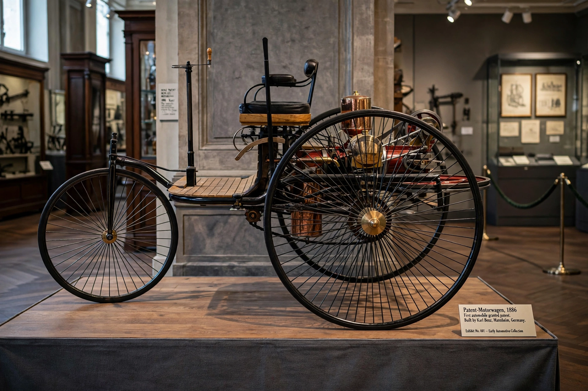

Karl Benz
From Wikipedia, the free encyclopedia

Karl benz (image regenerated from memory)
Karl Friedrich Benz (1844–1929) was a German engine designer and automotive engineer, widely regarded as the inventor of the petrol-powered automobile. His Benz Patent-Motorwagen, built in 1885 and patented in 1886 (DRP No. 37435), was the first practical automobile: a three-wheeled vehicle with a single-cylinder four-stroke engine, designed from the start as a motor car rather than a converted carriage. His wife Bertha Benz famously proved it on the first long-distance drive in 1888.
Early life and engines
Born in Karlsruhe, Benz studied mechanical engineering and worked in iron foundries and as a designer of stationary engines. With partners he founded Benz & Cie. in Mannheim (1883) to build industrial gas engines, whose income funded his car experiments.
The Patent-Motorwagen
The 1886 Motorwagen had a horizontal single-cylinder engine (about 0.75 hp) driving the rear wheels by belt and chains, an electric ignition, water cooling and a tubular steel frame. It reached about 16 km/h. Benz sold his first car in 1888; improved versions (Model 3) followed at the Paris Exposition.
Bertha Benz and legacy
In August 1888 Bertha Benz, without her husband\'s knowledge, drove a Model 3 some 106 km from Mannheim to Pforzheim with their sons, fixing problems en route (buying fuel at pharmacies, clearing a fuel line with a hatpin) — the first long-distance automobile journey, and brilliant publicity. Benz & Cie. became the world\'s largest car maker by 1900; in 1926 it merged with Daimler to form Daimler-Benz (Mercedes-Benz).